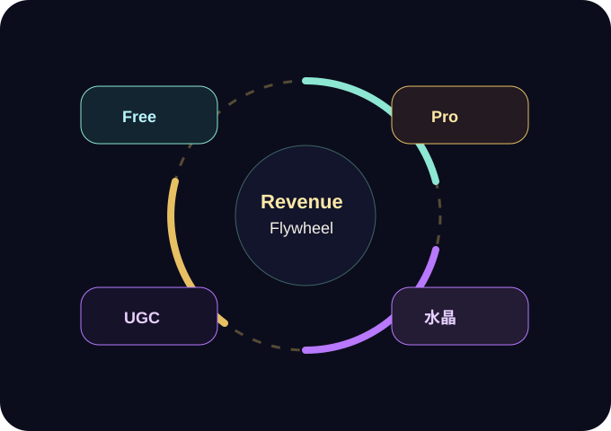

流量斷層
D&D 與奇幻 IP 吸引很多人，但規則書與創角流程讓新手停在門外。
→ 30 秒創角入桌市場頁改成營收飛輪與客群任務，讓評審或合作方快速理解：痛點在哪、誰會先付費，以及平台如何長大。

D&D 與奇幻 IP 吸引很多人，但規則書與創角流程讓新手停在門外。
→ 30 秒創角入桌真人 DM 培養成本高，時間難約，導致需求被壓抑。
→ AI DM 全天候主持上班族與學生難以固定 3 至 5 小時跑團。
→ 單人可中斷冒險大量西方奇幻題材使繁中玩家缺少文化熟悉感。
→ 台灣題材與在地語氣他們重視穩定品質、可中斷、可長期養成。官網要讓他們相信這不是玩具，而是能持續消費的冒險工具。
這群人需要的是第一分鐘就知道怎麼玩。新版用「創角卡片」和「30 秒入桌」降低心理負擔。
互動文學迷可以被「選擇後果」與「自由輸入」吸引，成為從桌遊圈外進入的第二波用戶。
UGC 編輯器與分潤機制成熟後，Planar Table 可以從工具變成劇本平台，形成內容護城河。
新版用「營收飛輪」視覺取代單純價格表，讓成長邏輯更容易被理解。

每日有限對話與官方短劇本，讓玩家先完成一次成功冒險。
解鎖完整劇本、無限對話、私人劇本庫與進階角色保存。
角色立繪、命運修正、復活角色與高耗能生成作為加值項目。
規則與資料會落盤，避免 AI 任意改血量、物品或判定結果。
繁中語境與台灣題材從核心設計開始，能形成文化差異化。
不取代真人溫度，而是處理永遠約不齊的剛性痛點。